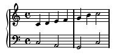
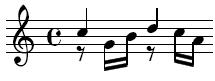

A Notelist score contains one or more voices and sequences, each containing a combination of control statements and note statements. A voice is used to group one or more notes that follow sequentially in time. A sequence defines a set of statements than can be inserted into a voice by “playing” the sequence. A control statement either changes the settings associated with a voice or controls how Notelist interprets the score. Note statements define sounds to be played by the synthesizer.
Collecting notes into voices allows us to define notes without having to calculate the starting time for each note individually. As each note is generated, the start time is automatically moved forward by the duration of the note. In addition, each voice maintains current volume level, tempo, articulation, transposition, and default parameter values for notes. This allows each note to be specified with a minimal amount of information.
Most control statements only affect the current voice, but a few are global and may occur outside of a voice. Global control statements must be used carefully since they affect all subsequent notes in all voices.
Each note statement begins with a value for the pitch. The pitch can be an integer value with middle C represented by the value of 48. Pitch can also be represented by a letter representing pitch class, followed by an optional accidental and octave. The pitch letter is one of A-G. The accidental can be ‘#’ for sharp, ‘b’ for flat, ‘x’ for double sharp and ‘d’ for double flat. The octave value 4 represents the octave of middle C. For example, ‘C4’ is middle C, and ‘F#3’ is F# below middle C. Octave numbers carry forward for successive pitches and only need to be entered when the octave changes. Accidentals, however, must be specified whenever they occur since there is no concept of ‘key’ in Notelist.
Rests are indicated by a pitch letter of ‘R’.
Rhythm can be represented as absolute time in seconds or by a rhythm value. A rhythm value represents a fraction of a whole-note at the current tempo and is indicated by a ‘%’ followed by a number. For example, ‘%4’ is a quarter-note and ‘%8’ is an eighth-note. The number in a rhythm value is not required to be a standard sub-division of the beat. Thus, %10 would be 1/10 of a whole note, and %2.5 would represent 4/10 of a whole-note.
Because a rhythm value is relative to the duration of a whole note, the actual duration will vary depending on the current tempo. Absolute time values are used when the exact time of the note is important, but, in general, it is better to use rhythm values so that durations can be changed globally using a tempo change rather than having to retype the duration for each note.
Dynamics (i.e., volume levels) are specified with a number in the range 0 to 100. A value of 0 represents silence and 100 represents maximum amplitude available in the synthesizer. Dynamics can be controlled on a note-by-note basis. In addition, a volume statement can be used to modify the per-note volume levels for all subsequent notes in a voice. Volume levels are linear amplitude values, not decibels.
In addition to pitch, rhythm and dynamics, a note statement can include any number of values that represent synthesizer parameters. Instrument parameters are passed to the synthesizer and are not interpreted by Notelist. The number of parameters and their interpretation is dependent on the synthesizer instrument.
In most cases where a value is allowed, the value can be either a single number or a calculated value. A calculated value is called an expression. An expression consists of operands separated by operators. The operand in an expression can be a number, character string, pitch, rhythm or variable. Operators can be one of the following.
| Unary Operators | |
| -a | Negate the value of a |
| ~a | True if a is false. The word ‘not’ can be used as well. |
| eval a | The string a is evaluated by an external scripting engine (if available). |
| Arithmetic Operators | |
| a * b | Multiply a and b |
| a / b | Divide a by b. |
| a ^ b | Exponentiation, raise a to the power b. |
| a + b | Add a and b |
| a - b | Subtract a from b |
| Relational Operators | |
| a < b | True if a is less than b. |
| a <= b | True if a is less than or equal to b. |
| a > b | True if a is greater than b. |
| a >= b | True if a is greater than or equal to b. |
| a = b | True if a is equal to b. A double equal ‘==’ can be used instead of the single ‘=’ if desired. |
| a <> b | True if a is not equal to b. |
| a & b | True if both a and b are non-zero. The word ‘and’ can be used instead of ‘&’. |
| a | b | True if either a or b are non-zero. The word ‘or’ can be used instead of ‘|’. |
| String Paste Operator | |
| a :: b | Concatenate the strings a and b into one string. Numbers are converted to a string before concatenation. |
Operator precedence is from top to bottom of the table. For example, multiplication, division and exponentiation have higher precedence than addition and subtraction and are evaluated first. Equal precedence operators are evaluated in order, left to right. Parts of the expression can be grouped within parentheses to override the order of evaluation. For example, 5*4+2 would multiply first then add, but 5*(4+2) would add first then multiply.
Internally, pitch values are converted into the equivalent integer value and may be used as number values in an expression. For example, C4+1 represents a semi-tone above middle C and is the same as C#4. C4+12 would be one octave higher, i.e., C5. Pitch values cannot be treated in the same manner as frequency. For example, C4*2 is not one octave higher than C4. It would be equivalent to 48*2=96, which is pitch C8.
Rhythm values can also appear as operands in an expression, making specification of tied and dotted rhythms easier. For example, %4+%8 is equivalent to a quarter note tied to an eighth note, while %4*3+%8 is equal to three quarter notes and an eighth note tied together.
Operands may also be one of the built-in variables:
| Variable | Value |
| curpit | Last pitch value |
| curdur | Last duration value |
| curvol | Last volume value |
| curtime | Current time in seconds |
| count | Current loop count |
| nlver | Current Notelist version |
Some examples of Notelist script syntax are shown below. In the following examples keywords are shown in lower case letters. However, Notelist does not distinguish between upper and lower case for keywords, (i.e., VOICE, Voice, and voice are all equivalent).
Notelist is designed to be as intuitive as possible for musicians while still allowing extensions useful for synthesizers. Notelist is modeled on traditional musical notation but using text encoding instead of a graphical representation. For example, we can take a traditional music score like the following:
and write it in Notelist as follows:
tempo 4, 60;
voice 1 begin instrument “melody”; volume 100; channel 0; C4, %4, 100; D4, %4, 100; E4, %4, 100; F4, %4, 100; G4, %4, 100; B3, %4, 100; C4, %2, 100; end voice 2 begin instrument “bass”; volume 95; channel 1; C3, %2, 100, 10, 20; A2, %2, 100, 10, 30; G2, %2, 100, 15, 20; C3, %2, 100, 10, 20; end
This example contains two voices that play simultaneously. Each voice is identified with an integer value. The lines between the begin...end keywords specify the sequence of notes played on the voice. Each note statement consists of a pitch, rhythm, volume level and optional parameters. The first voice plays notes from C4 to G4, B3, C4 in quarter notes using an instrument named "melody" on mixer channel 0. The second voice plays C3, A2, G2, C3 in half notes on an instrument named "bass" on mixer channel 1 at a slightly lower volume level.
The tempo statement is optional and only needed when the rhythm is indicated with the ‘%’ form. In this case, the tempo is set to quarter notes at 60 bpm. Notice that the tempo statement is outside the first voice indicating it is a global control statement. This statement, and a few others, apply to all voices regardless of where the statement is located and are applied from the point where they are located in the file. A tempo statement within a voice will modify all notes in subsequent voices, not only notes within the voice.
The lines beginning with instrument define which instrument should be used to play the following notes. An instrument statement is an example of a Notelist control statement. Control statements affect the performance of subsequent notes in the voice but do not produce any sound output. Only note statements generate sound.
Each note or control statement must be terminated with a semi-colon. Because a note is terminated with a semi-colon, a note can contain a variable number of parameters and can span multiple lines, and multiple notes can be placed on a single line. Blank lines can be inserted at any point to help set-off different phrases, sections, etc. Likewise, a comma is used to separate items in a list. Spaces, tabs, and end of lines (whitespace) are generally ignored by the Notelist program and can be used freely to format the score in any manner desired. Spaces are required to separate a keyword (such as voice) from subsequent values, but otherwise spaces can be included or left out as desired.
The begin...end keywords are used to enclose multiple note statements. Without them each note must begin with a voice keyword. For example, we could have written the previous example like this:
tempo 4, 60; voice 1 instrument “melody”; voice 1 channel 0; voice 1 volume 100; voice 2 instrument “bass”; voice 2 channel 1; voice 2 volume 95; voice 1 C4, %4, 100; voice 1 D4, %4, 100; voice 2 C3, %2, 100; voice 1 E4, %4, 100; voice 1 F4, %4, 100; voice 2 A2, %2, 100; voice 1 G4, %4, 100; voice 1 B3, %4, 100; voice 2 G2, %2, 100; voice 1 C4, %2, 100; voice 2 C3, %2, 100;
Because each voice maintains separate values for the current time and instrument, notes in a voice do not need to be contiguous. A Notelist score can freely switch between voices, or can group all notes of each voice together with begin...end. A voice can also be entered using multiple begin...end blocks because the starting time for each block begins at the end time of the previous block.
A note is defined by a pitch, rhythm and volume value, but only the pitch needs to be explicit if the rhythm and volume values are the same as the previous note. For example, the first voice above could be written as:
voice 1 begin C4, %4, 100; D4; E4; F4; G4; B3; C4, %2; end
Typically, pitch and rhythm are specified for each note for clarity. The shortened form is most useful when a note statement contains a group of notes. A group is indicated by enclosing values in braces with each value separated by a comma. This notation not only allows multiple notes to be easily contained on one line and avoids entering duplicate values, but is also an intuitive way to represent a musical phrase. For example:
voice 1
begin
{ C4, D4, E4, F4, G4, B3 }, %4, 100;
C4, %2, 100;
end
As with the previous example, only one rhythm value and one volume value are specified and thus repeat for subsequent notes. We can provide a group for rhythm and volume values as well and allow the pitch value to repeat. In the following example, the pitch C4 is repeated four times followed by C4 through F4. The volume value is not specified on the second note statement since it will carry forward from the previous note.
voice 1
begin
C4, { %4, %16, %16, %2 }, 100;
{ C4, D4, E4, F4}, { %4, %16, %16, %2 };
end
When using multiple groups on a single line, the longest group controls the number of notes that are played. In the following example, the first note statement plays C4 and D4 as quarter notes followed by E4 and F4 both as half notes. The second statement plays C4 four times with a crescendo.
voice 1
begin
{ C4, D4, E4, F4 }, { %4, %4, %2 }, 100;
C4, %4, { 50, 60, 75, 100 };
end
A pitch group can also be enclosed in square brackets to represent simultaneous pitches, (i.e., a chord). If only one rhythm value is given, it will apply to all pitches in the chord. However, it is possible to specify different rhythm values for each pitch. In any case, the start time of the note following the chord will be determined by the longest duration in the chord. In the following example, the first note statement plays a C-Major chord for one quarter note, followed by a F-Major chord for one quarter note, but with only the C4 pitch sounding through the entire duration.
voice 1
begin
[ C4, E4, G4 ], %4, 30;
[ C4, F4, A4 ], { %4, %8, %8 }, 30;
C5, %4, 30;
end
The volume level has been lowered to 30 since we have three notes sounding simultaneously. This is an important consideration when notes either sound simultaneously or overlap due to a long decay.
A note group can be preceded by the keywords sus (sustain) or tie in order to modify the interpretation of the duration values. The sus keyword causes the first note in a group to be interpreted as the total duration for all notes in the group. Subsequent note start times are interpreted as a delay from the previous note. This produces the effect of a roll or arpeggio with earlier notes held through the total duration.
sus { C4, E4, G4, C5 }, { %1, %8, %8, %8 }, 25;
In this statement the total duration is a whole note with each successive pitch played an eight-note apart. A value of 0 for a duration after the first will cause a pitch to sound simultaneously with the previous pitch.
sus { C4, E4, G4, C5 }, { %1, 0, %8, %8 }, 25;
In this case, C4 and E4 sound together followed by G4 and C5 spaced an eighth note apart.
The tie keyword causes the first value in the group to be interpreted as the starting value with subsequent values representing modifications to the note. As with sus the rhythm values specify a delay from the previous value.
tie { C4, E4, G4, C4 }, { %1, %4, %4, %4 }, 100;
In synthesizer terms, a tie alters the oscillator frequency, volume level, and other parameters without resetting the oscillator phase or re-triggering the envelope generator. Not all synthesis instruments have this capability, and changing parameters that alter the envelope may have no effect on a sounding note.
The previous examples are similar to traditional notation. However, Notelist also includes a variety of programming features that allow generation of notes by calculation. The following example defines sequences for major and diminished arpeggios and then plays the arpeggios on different pitches.
var arppit; seq "arpmaj" begin arppit, %16, 100; arppit+4, %16, 100; arppit+7, %16, 100; arppit+12, %16, 100; end seq "arpdim" begin arppit, %16, 100; arppit+3, %16, 100; arppit+6, %16, 100; arppit+9, %16, 100; end voice 1 begin instr "Synth1"; chnl 0; volume 100; set arppit = C3; loop 4 play "arpmaj"; set arppit = F3; loop 4 play "arpmaj"; set arppit = B2; loop 4 play "arpdim"; set arppit = C3; loop 4 play "arpmaj"; C3, %4, 100; end
In the next example, Notelist statements produce a random series of pitches centered around middle C with the rhythm values increasing from an eighth note to a sixteenth note triplet followed by a series of notes that fade away as the pitch rises chromatically.
voice 1 begin instrument "Synth1"; channel 0; volume 100; init 0 exp %8, %24, 40; loop 40 C4+rand(-5,5), fgen(0,1), 100; init 0 line 100, 20, 24; loop 24 C4+count, %24, fgen(0,1); end
Because a Notelist score is a text file, it is possible to edit the score with any text editor and also possible to generate a score programatically. Since any program that can produce a text file can produce a Notelist score, Notelist can also be used as the output format for automated composition programs.
An alphabetized list of valid Notelist statements follows. Keywords may be any mixture of upper and lower case. Arguments are indicated in italics while keywords are indicated by capitalized text.
Syntax: artic type value;
The ARTIC statement modifies the actual duration of notes. The start time of a note is always controlled by the rhythm value of the previous note and ARTIC does not alter the relative start times, only the sounding duration. This allows the duration of notes to be specified independently of the time interval between notes. Notes can thus be spaced or overlapped as needed while still using rhythm values to control the timing between note start times.
Articulation can be entered using an ARTIC control statement or by adding the articulation value after the volume level. In either case, the articulation value can be one of three types. A fixed articulation value sets the duration of the note to the articulation value regardless of the rhythm value. An add articulation value adds to the note duration. A percent articulation value extends the note by a percentage of the rhythm value.
voice 1
begin
artic add 0.1;
C4, %4, 100;
artic percent 90;
C4, %4, 100;
artic fixed %1;
{C4, C5}, %4, 100;
artic percent param;
{C4, G4, C5}, %4, 100, {80, 90, 100};
end
The first ARTIC statement causes the subsequent note to be played for 1/10 second longer than the given duration causing an overlap with the following note. The second ARTIC statement causes the note to be played for 90% of the given duration, producing a short gap between notes similar to staccato. The third ARTIC statement causes the notes to be played for the duration of a whole note even though the duration of the following note is given as a quarter note. The last ARTIC statement causes the note duration to be modified using the values after the volume. The first note is held for 80% duration, the second at 90% duration, and the third at 100% of the duration.
Syntax: begin notelist end
BEGIN and END are used to bracket multiple statements. Although they can occur anywhere within a voice, typically they are used to group statements following a VOICE, SEQUENCE, LOOP, IF...ELSE, or WHILE...DO statement.
Syntax: call “script”;
The CALL statement passes a string to an external script engine for execution. Unlike the script statement, the CALL statement is executed during sequence generation.
Note: This feature is not implemented in the current version of BasicSynth.
Syntax: channel number;
The CHANNEL statement sets the mixer output channel for the current voice. The single argument indicates the mixer channel number.
A voice is usually associated with a specific instrument and mixer input channel. However, a voice can switch between instruments and channels at any time, and multiple voices can be played on the same instrument or channel. This is especially useful when complex polyphonic voices are used. For example, a complex rhythm with overlapping notes can be specified more easily with multiple voice lists.
voice 1
begin
instrument “piano”;
channel 0;
{C4, D4, E4, F4}, {%4, %4, %8, %8}, 100;
end
voice 2
begin
instrument “piano”;
channel 0;
{C3, G3, C3, G2}, {%16, %8, %16, %2}, 100;
end
The keyword CHANNEL can be abbreviated as CHNL.
Syntax: ! comment text
A comment is any text that should be ignored by the Notelist parser. A comment begins with either an exclamation point (!) or a single quote (') and extends to the end of the line.
! A bang comment ' A quoted text comment voice 0 'comment after statement begin ... end
Syntax: double transpose, volume;
The DOUBLE keyword indicates that subsequent notes should be doubled at the pitch offset given by transpose and the volume level indicated by volume. The volume parameter is optional. Doubling is canceled by using the keyword OFF for the transpose value.
double 12, 50;
{C4, D4, E4, F4, G4}, %4, 100;
double OFF;
{C4, D4, E4, F4, G4}, %4, 100;
In this example, the first note statement would result in a scale played in octaves with the upper note at a volume of 50 and the lower note at a volume of 100.
Syntax: eval “string”
The EVAL keyword passes the string argument to an external scripting engine for evaluation. EVAL is treated as a unary operator. If the argument is an expression other than a string literal, it must be placed in parentheses.
Note: This feature is not yet implemented in BasicSynth.
Syntax: fgen(unit, amount)
The FGEN keyword invokes one of the built-in function generators. See INIT for an explanation.
Syntax: if condition then notelist else notelist
The IF...THEN...ELSE statement is used to conditionally execute statements. The condition between IF and THEN is an expression that controls which statement is executed. If the condition is true, the statement after THEN is executed. If the condition is false, the statement after ELSE is executed. The ELSE part is optional. The statement controlled by IF...THEN...ELSE can also be a BEGIN...END block, allowing for a group of statements to be controlled by a single condition.
In the following example IF is used to create two endings for a repeated phrase.
voice 1
begin
loop (2)
begin
{C4, E4, G4, F4, A4}, %8, 100;
if count = 0 then
{C5, G4, E4}, %8, 100;
else
{B4, G4, C5}, %8, 100;
end
end
Syntax: include “filename”;
The INCLUDE statement includes another file into the current file. The filename argument is normally a complete path to the file. Relative paths can be used and will be relative to the current directory where Notelist is running.
Note: In BasicSynth, the current directory is set to the project directory.
Syntax: init unit function start, end, step;
Notelist includes a set of built-in functions that calculate a series of values. The INIT statement is used to initialize the function generator. The fgen operator is used to produce the next value in the series.
The unit argument is an integer value in the range [0,9] that identifies the generator in later calls to fgen. Since function generators can be reused, the unit range only limits the number of generators that can be operating simultaneously within a voice.
The start argument indicates the starting value for the series. The end argument indicates the ending value for the series. The steps argument indicates how many discrete steps are calculated. The type argument indicates one of the following:
| LINE | The values will be linearly interpolated between start and end. |
| EXP | The values will be exponentially interpolated between start and end. |
| LOG | The values will be logarithmically interpolated between start and end. |
| RAND | The value will be a random value between start and end. |
The fgen operator returns the current value of a function. The unit value should match a previous init statement. The fgen function is especially useful within loops to provide crescendo, decrescendo, or step-wise alteration of the synthesizer parameters:
init 0 line 50, 100, 10;
loop 10
{ C4, D, E, F, G}, 0.1, fgen(0,1);
The fgen function is zero based. That is, on the first call it will return the start value and will only return the end value after n+1 steps. Once fgen reaches the end of the series, the value will remain at the end value until another init statement on the same unit is encountered, and fgen will continue to return the end value when invoked. In the example above, volume would range from 50 to 95.
When fgen is invoked, the second argument indicates how many steps to move forward. The steps value in the init statement is usually an integer value and fgen is invoked as fgen(unit,1) to retrieve the next value. However, the steps value on the init statement can be set to a duration. Each call to fgen should then indicate how much of that duration has passed. This is useful to map a series of steps onto notes of varying duration.
init 0 line 50, 100, %1;
{ C4, D, E, F }, %4, fgen(0,%4);
In addition to fgen, the rand function can be used to produce a random value without first initializing a function with init. The two arguments to rand are optional. Without arguments, rand returns a value between 0 and 1.
Syntax: instrument id;
The INSTRUMENT statement identifies the synthesizer instrument for the current voice. All notes subsequent to the INSTRUMENT statement will be played on the indicated instrument. The id argument is typically a string that matches a pre-defined synthesizer instrument, but can also be a number if appropriate.
Note: In BasicSynth, the id is always a string and must match one of the instruments configured for the project. A number is used in versions of Notelist that export to other systems.
Syntax: loop (count) notelist
The LOOP statement is used to repeat one or more note statements. The count argument indicates the number of times the loop repeats. The notelist is either a single note statement or a compound statement in the form of a BEGIN...END block. The parentheses around the loop count are optional, but must be included if the count expression could be interpreted as a part of the first statement in the Notelist.
loop 5
{ C4, E, G, C5 }, 0.25, 50;
loop 5
begin
{ C4, E, G, C5 }, 0.25, 50;
{ C4, E, G, C5 }, 0.25, 80;
{ C4, E, G, C5 }, 0.25, 100;
end
Loops can be nested within loops to any level:
loop 5
begin
{ C4, E, G, C5 }, 0.25, 50;
{ C4, E, G, C5 }, 0.25, 80;
loop 2
begin
{ C4, E, G, C5 }, 0.25, 100;
loop 2
{C4, E, G, C5}, 0.125, 50;
end
end
Control statements apply to all notes from the point where they are encountered and must be used carefully within loops. For example, a volume statement at the end of a loop will apply to all iterations after the first. In the following example, the first iteration will play at a volume level of 100 while iterations 2-5 will play at volume 50.
volume 100;
loop 5
begin
{ C4, E, G, C5 }, 0.25, 50;
volume 50;
end
However, this feature can be useful, especially with nested loops. In the following example, the phrase is played four times, alternating between loud and soft.
loop 2
begin
volume 100;
loop 2
begin
{ C4, E, G, C5 }, 0.25, 50;
volume 50;
end
end
Loops are expanded by the Notelist parser, not the sequencer. Although this produces a longer event sequence, it allows values within the loop to be calculated during processing and thus different for each iteration. The COUNT keyword can be used inside the loop to modify a value based on the number of times the loop has played. The value is zero-based and varies from 0 to n-1, where n is the loop count. The following loop uses the COUNT value to play a chromatic scale with crescendo.
loop (12) C4+count, %8, 40+(count*5);
In the case of nested loops, each loop has its own instance of the COUNT value and the value will always refer to the controlling loop count. In the following example, the chromatic scale is played 5 times, each time at a higher volume level.
loop 5
begin
volume 50+(count*10);
loop (12)
C4+count, %16, 80;
end
If COUNT is referenced outside of a loop it has a value of 0.
Syntax: map instrument params...;
The MAP statement is used to translate a note parameter value. For instruments with a small number of parameters, position dependent values is generally not a problem. However, when the instrument includes a large number of parameters it is often the case that we only want to give values for a small number of the possible values. Parameter maps allow selecting a sub-set of an instrument’s parameters .
The values on the map statement specify the actual instrument parameter id values for the nth parameter on the note statement. Suppose that an instrument uses parameter 18 to set the envelope attack and parameter 22 to set the envelope delay. Rather than list all 22 parameters on the note statement, we can create a map of the two values we need. The following example sets the first parameter to the attack rate and the second parameter to the release rate.
map “iname” 18, 22;
voice 1
begin
instr “iname”;
C4, %4, 100, 0.1, 0.4;
end
A parameter map can contain optional scaling values for each parameter. The scaling value is specified by adding :value after the parameter id. This allows parameters to be specified in a normalized range and also provides automatic conversion of values when the instrument changes. For example, suppose that two instruments both have a parameter to indicate a modulation of the sound, but instrument in1 has a range of 0-100 on parameter 19 while in2 has a range of 0-1 on parameter 20. We can create two maps so that we can change between instruments without having to change the note statement values.
map “in1” 19;
map “in2” 20:0.01;
voice 1
begin
instrument “in1”;
C4, %4, 100, 50;
instrument “in2”;
C4, %4, 100, 50;
end
These two statements play C4 on instrument 1 with a parameter value of 50 for parameter 19, and on instrument 2 with a parameter value of 0.5 for parameter 20. If we later decide to switch the order of the instruments, the note statements will still produce the correct parameter values.
Parameter numbers can also be given by a name in quotes, if the instrument supports name to ID mapping.
map “iname” “atk”, “dec”;
Instrument parameter maps are global and remain in effect until another map statement is encountered for the instrument. However, maps can be changed within a voice to allow varying the selection of parameters on subsequent notes.
Syntax: mark markid;
The MARK and SYNC statements are used to synchronize note start times between voices. The argument to MARK and SYNC can be a string or number. The MARK statement saves the current start time; the SYNC statement retrieves the saved value and sets the voice start time.
voice 1
begin
{C4, D4, E4, F4, G4}, {%12, %13, %14, %15, %16};
mark “cue1”;
{C4, D4, E4, F4}, %16, 100;
G4, %4, 100;
end
voice 2
begin
sync “cue1”;
{C3, G3}, %4, 100;
end
In this example, the initial scale has duration values that make it difficult to calculate the exact start point for voice 2. Using the MARK and SYNC pair causes voice 2 to play the bass notes at the point where voice 1 reaches the 16th note scale. In addition, if the start time is moved, or the rhythm of the first voice is changed prior to the mark point, the second voice will still synchronize to the first voice.
Syntax: maxparam number;
The MAXPARAM statement redefines the maximum number of parameters allowed on a note statement.
Each note statement carries forward the values from the previous note statement. Since the number of parameters varies depending on the instrument, Notelist cannot know in advance how many parameters should be retained. By default, space for 10 values is allocated. If more or fewer parameters are needed, MAXPARAM can be used to extend or reduce the size of the parameter buffer.
The value of MAXPARAM is global and applies to all instruments on all voices.
Syntax: middlec number;
The MIDDLEC statement is used to move the octave number of middle C. The default value is 4 but sometimes it is useful to re-define this point. The following statement would cause C6 to refer to middle C.
middlec 6;
The value of MIDDLEC is processed by the parser and must be a constant integer, not an expression. Changing the octave of middle C only affects parsing and does not change the integer value for middle C passed to the synthesizer.
Syntax: midicc control, value;
The MIDICC statement emits a MIDI controller change message. The control argument specifies the MIDI controller number. The value argument is the value for the controller. Both control and value must be in the ragne 0-127.
Syntax: midipw value;
The MIDIPW statement emits a MIDI pitch wheel change message. The value argument is the raw pitch bend value and should be in the range +/-8192.
Syntax: midiprg value;
The MIDIPRG statement emits a MIDI program change message. The value argument is the program number in the range 0-127.
Syntax: midiat value;
The MIDIAT statement emits a MIDI channel pressure (after touch) message. The value argument is the range 0-127.
Syntax: mixer mixfn, mixop, [fxunit], start, [end, time, [freq, wt]];
The MIXER statement provides dynamic mixer control functions that set the value of an input level, pan or effects unit. The mixfn argument can be one of the following:
| Argument | Use |
| in | Change an input level |
| pan | Change an input pan setting. |
| send | Change the amount sent to an effects unit. |
| fxin | Change an effects unit volume level. |
| fxpan | Change an effects unit pan setting. |
A MIXER control statement that affects an input (in, pan or send) uses the current channel for the voice as the mixer channel number. When the function is fxin or fxpan, the first argument indicates which effects unit is altered. The mixop argument is optional, and can be one of the following:
| Argument | Use |
| set | Set the value to start. The other parameters are ignored. If the mixop argument is missing, set is assumed. |
| ramp | Produce a linear change from start to end over a duration of time. |
| osc | Continuously vary the value from start to end over a duration of time at the rate freq using the wavetable wt. If the wavetable argument is missing, a sine wave is used. |
Syntax: [note] pitch, rhythm, volume, params;
A NOTE statement defines a sound to be produced on the synthesizer. A statement that does not begin with a keyword is considered a NOTE statement. The NOTE keyword can also be used to indicate a note.
See the examples above for information on NOTE statements.
When the VELOCITY option is set, the note volume value is passed to the instrument as the note-on velocity.
Syntax: option optname {ON|OFF};
The OPTION statement sets one of three global options.
Normally the first parameter of a NOTE statement is interpreted as a pitch. Setting the FREQUECNY option ON treats the value as the actual note frequency in Hz.
Normally volume values are normalized linear amplitude values. Setting the VOLDB option ON treats the volume value as a decibel value. A value of 100 is mapped to 0dB (a linear amplitude value of 1.0) while a value of 0 is mapped to -100dB (i.e. 100dB attenuation).
Normally the note volume is scaled and multiplied by the voice volume value. When the VELOCITY option is ON, the note volume is passed to the instrument as the MIDI note-on velocity value and the voice value is normalized (0-1) and passed as the volume level. When the VELOCITY option is OFF, the note-on velocity is set to 127.
Syntax: play sequence;
The PLAY statement plays a defined sequence.
See SEQUENCE.
Syntax: param id, value;
The PARAM statement sets a single instrument parameter. Parameter values on a note statement are position dependent. Thus, to set parameter number n all parameters up to n normally must appear on the note statement. The PARAM statement allows changing a single parameter without specifying all other parameters. The parameter id is zero-based (i.e., id 0 represents the first parameter).
param 0, 1; param 1, 2; param 2, 3; C4, 1, 100; param 2, 4; D4, 1, 100;
These statements are the equivalent of:
C4, 1, 100, 1, 2, 3; D4, 1, 100, 1, 2, 4;
The second PARAM statement sets the third parameter to a value of 4 and leaves other parameters at the previous value.
Syntax: repeat (count) notelist
REPEAT is an alternate keyword for LOOP. See LOOP.
Syntax: script “string”;
The SCRIPT statement passes a character string to an external scripting engine. The string argument to the script statement can be a file of scripting language code that will be loaded into the scripting engine for later use, or it can be a statement in the script language that is executed immediately. The script statement is executed during parsing of the Notelist script.
Syntax: set variable = value;
The value of a variable is assigned using the SET statement. The SET statement can appear within a voice as well as outside of a voice. The value on the right of the ‘=’ can be any valid expression and can include pitches and rhythm values along with numbers. When a rhythm value is used, it is converted to actual time at the point of the assignment.
set oct = 12; set step = 1; set val2 = C4 + (oct * step);
Any declared variable in Notelist can be treated as an associative array. When the variable name is followed by an index in brackets, the index value is associated with the value. The index can be a number or a string.
set myval["vol"] = 100; set myval[0] = 200;
Arrays can be used to store a set of values that are iterated using the loop or while statements. The following example generates a random series of pitches and plays them 12 times, transposing up a semitone each time.
var index; var pits; voice 0 begin set index = 0; while index < 16 do begin set pits[index] = rand(48,60); set index = index + 1; end loop 12 begin transpose count; loop 16 pits[count], %16, 100; end end
Syntax: sequence id begin notelist end
A SEQUENCE statement begins definition of a note sequence. Often, it is useful to define a series of notes that repeat at different places in the composition. By defining the repeated phrase as a sequence, the notes can be inserted by referring to the sequence rather than repeating entry of the notes. A sequence is identified by a name or number and is invoked by that name or number from within subsequent voice statements by using the PLAY statement.
The content of the sequence is enclosed in a BEGIN...END block and is the same set of statements that can appear within a voice. The sequence itself must be defined outside of any voice.
sequence “short”
begin
{ C4, D, E, F}, {%4, %16, %16, %8}, 100;
end
voice 1
begin
play “short”;
play “short”;
end
Since a sequence is played within the context of a voice, control statements that modify the interpretation of subsequent notes should be used carefully. For example, a TRANSPOSE statement within a sequence would remain in effect for notes within the voice that come after the sequence is played.
The keyword SEQUENCE may be abbreviated to SEQ.
Syntax: start track, [loop];
The START statement starts a background track. The optional loop count indicates how many times the track should be played. If the loop value is missing, or is zero, the track will play until a STOP statement is given.
Syntax: stop track;
The STOP statement stops a background track.
Syntax: sync markid;
See MARK.
Syntax: system “command”;
The SYSTEM statement invokes an external program using the system command shell. SYSTEM is executed during parsing of the script.
Syntax: tempo beat, time;
The TEMPO statement defines the duration for rhythm values. The beat argument represents a fraction of a whole-note and should be an integer value. The time argument indicates the beats per minute. The following example sets the tempo to quarter note at 120bpm.
tempo 4, 120;
TEMPO is a global control statement and affects all subsequent notes. It can appear outside a voice.
Syntax: time seconds;
The TIME statement sets an explicit start time for the next note in the current voice. TIME should be used sparingly since it bypasses the automatic start time calculation for notes. It is most useful when the sound must be synchronized to an external source, such as a video. However, the parameter to time can be any valid expression, including rhythm values and the curtime built-in variable. This provides automatic conversion of the time value based on the tempo and/or current start time.
time 10; time curtime+10; time curtime+%1;
The first example sets the start time for the next note to 10 seconds, absolutely. The second example moves the start time forward by 10 seconds. The third example moves the start time forward by the duration of a whole note at the current tempo.
TIME can also move the next note start time backwards. This is sometimes the only convenient way to enter a complex polyphonic phrase. For example:
can be transcribed as:
{C5, D5}, {%4, %4}, 100;
' Backup one half-note
time curtime - %2;
{R, G4, B4, R, C5, A4 }, {%8, %16, %16, %8, %16, %16}, 100;
Syntax: track n;
The TRACK statement changes the sequencer track for subsequent notes and resets the current time to zero. By default notes are assigned to track zero. Track zero is started automatically when the sequencer is started. When the track number is other than zero, all subsequent events in the voice are assigned to a separate sequencer track. Tracks other than zero must be explicitly started with a START statement, but can be started, stopped and looped individually.
Syntax: transpose offset;
The TRANSPOSE statement modifies the pitch of subsequent notes. The argument to transpose indicates the number of semi-tones to be added to the pitch value and can be negative or positive. Transposition is chromatic as there is currently no concept of key signature in Notelist.
Syntax: var name;
The VAR statement declares one or more variable names. Variables are used to hold a value that can change during sequence generation. All variables must be declared before they can used. A single statement can define multiple variables by separating the variable names with commas.
In Notelist version 1.0, variable names begin with a letter followed by any number of letters and digits and are case-insensitive (i.e., name and NAME are equivalent). Beginning with version 1.1, a variable name can contain ASCII letters (a-z,A-Z), numbers (0-9), underscore (_), dollar sign ($) and any non-ASCII character (character codes greater than 127, unicode U-007F). The variable name cannot start with a number. For compatibility with prior versions, ASCII letters in variable names are case-insensitive. However, non-ASCII letters are case sensitive.
Note: Single letters in the range [A-G], with or without a number following, represent pitches and cannot be used as variable names. Likewise, the single letters W,H,Q,S,T and EI represent rhythms.
var val1; var oct, step;
Syntax: version major.minor;
The version statement sets the version number for the Notelist file.
version 1.0;
By default, the version number is set to the version of the Notelist program. Subsequent versions of the program may alter the default behavior of Notelist statements and it might be necessary to indicate that the prior behavior should be used instead. By setting a version number as the first statement in the file, the parser and generator will revert to the previous behavior and the file will not have to be edited to be properly interpreted.
The current version of Notelist can be displayed using the WRITE statement:
write "Notelist version is " :: nlver;
Syntax: voice number notelist
The VOICE statement indicates that the following statement applies to the voice given by the number argument. The voice number can be any positive integer value, and any number of voices can be defined.
See the example section above for more information on Notelist voices.
Syntax: volume level;
The VOLUME statement sets a value that is multiplied by the per-note volume value. Using volume is similar to setting a mixer level on the synthesizer, but is performed internally by Notelist. Setting the volume on a voice can help balance the level between voices, but can also be used to generate a change in volume level without having to explicitly set each note volume. This makes it easy to produce a crescendo of notes that have varying volume levels, and to vary the range of a crescendo later without having to reenter the volume levels for all notes. For example,
voice 2
begin
volume 30;
{C3, G3, C3, G2}, {%16, %8, %16, %2}, {100, 80, 90, 100};
volume 40;
{C3, G3, C3, G2}, {%16, %8, %16, %2};
volume 50;
{C3, G3, C3, G2}, {%16, %8, %16, %2};
end
The keyword VOLUME can be abbreviated as VOL.
Syntax: while condition do Notelist
The WHILE...DO statement is used to repeatedly execute a statement, similar to a LOOP statement. Unlike a loop, the WHILE...DO statement contains a condition to control the number of times the statement is executed. Whereas the loop statement automatically increments the loop count, the expression that controls the while loop must be explicitly calculated. The following example loops five times, increasing the volume level by 20 on each step.
var val1;
voice 1
begin
set val1 = 20;
while val1 <= 100 do
begin
C4, %8, val1;
set val1 = val1 + 20;
end
end
Syntax: write “string”;
The WRITE statement is used to display a message during Notelist file conversion. It can be used for debugging or for informational purposes. The following statement displays the voice time at the point where the message is displayed.
write "Section 2 begins at " :: curtime;